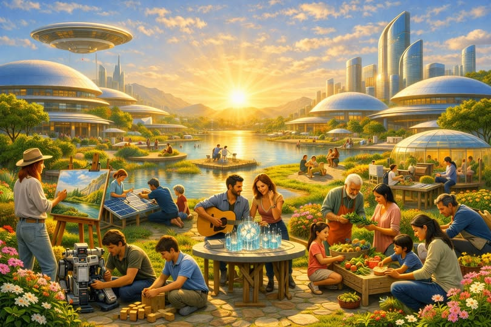

← Terra Nova Development — Article Index
Article #143
A World Without Money
A Vision of Abundance, Freedom, and Human Purpose

by Willis N. Butts | Terra Nova Vision Draft
Imagine a world where the central tension of human life—earning, spending, saving, losing—simply dissolves. A world where survival is not a transaction, where dignity is not conditional, and where the value of a person is no longer measured in currency. A world without money is not a world without structure; it is a world built on a different structure entirely.
The End of the Survival Economy
For thousands of years, money has been the mediator between human beings and the essentials of life. Food, shelter, medicine, safety—all filtered through the gate of affordability.
But in a world without money, survival is no longer an achievement. It is a given. The essentials become as universal as sunlight. No one earns the right to live; they simply live.
The Liberation of Human Purpose
When survival is guaranteed, purpose changes. People no longer choose work based on wages, but based on calling.
The engineer builds because she loves solving problems. The healer heals because compassion moves through him. The artist creates because beauty is a form of service. The world becomes a symphony of voluntary excellence.
The End of Artificial Scarcity
Money thrives on scarcity—real or manufactured. A world without money thrives on abundance—natural and engineered.
Automation, renewable energy, vertical agriculture, robotics, and artificial intelligence can expand our capacity to produce and distribute essential goods. The challenge is to design institutions that turn that capacity into reliable access for everyone.
When abundance becomes the baseline, hoarding loses much of its appeal and generosity becomes easier to practice. Resources still require stewardship, but deprivation need not be the organizing principle of society.
The Transformation of Relationships
Without money, relationships could shift from transactional to authentic. People would no longer need to network simply to survive; they could connect for the joy of connection. They could collaborate more freely and spend less of their lives measuring themselves by economic status.
Human beings could meet one another more often as equals, rather than primarily as economic roles. Financial fear would no longer dominate so many decisions about family, friendship, and community.
The Redesign of Systems
A world without money requires new systems—not chaos.
Governance becomes coordination, not control. Education becomes exploration, not credentialing. Healthcare becomes prevention and care, not billing. Technology becomes stewardship, not profit extraction. Every system is redesigned around human flourishing rather than financial throughput.
Such a transition would still require careful planning: fair allocation when resources are limited, transparent decision-making, protection of individual freedom, maintenance of infrastructure, and ways to encourage people to perform difficult or essential work. Removing prices would not remove these responsibilities. It would make designing humane solutions to them our common task.
The Spiritual Unveiling
When money disappears from the center of human existence, something ancient may reappear: the awareness that life itself is sacred.
People rediscover that worth is inherent, not earned. They remember that creation is collaborative, not competitive. They awaken to the possibility that the Kingdom of Heaven is not merely a distant realm, but a call to make the world around us more just, generous, and loving.
The Terra Nova Realization
Terra Nova is not anti-money; it is post-money. It recognizes the possibility that humanity may eventually outgrow the need for a token to mediate every exchange of value.
Money has served important coordinating functions, and any replacement must work at least as well at matching needs, capabilities, and scarce resources. But we should not mistake a tool for the ultimate purpose of civilization.
In a world of abundance, intelligence, and compassion, money could become an unnecessary relic—like training wheels on a bicycle that no longer needs them.
Conclusion: From Surviving to Living
A world without money is a vision worth pursuing—not because its arrival is guaranteed, but because it challenges us to ask how much suffering is truly necessary.
It is a world where purpose replaces pressure, abundance replaces fear, and dignity replaces desperation. It is a world toward which humanity can begin moving today by making essentials more accessible, reducing artificial barriers, and designing systems around human need.
And if we succeed, future generations may look back and wonder how we ever believed that life itself needed a price tag.
There is no them. There is only us.